Materials
Materials
This article is a clone from the original GoodEarth Connect catalog. View the original post at:
Boundless Expressions- Chapter 3 Of assorted use & colours of timber ↗
Boundless Expressions
Series 1 – Carpentry
Boundless Expressions
Series 1 – Carpentry
Introduction
The title of “Master Craftsman” in India was that of a carpenter in many traditional societies owing to the highly specialised craft’s requirement of rigour and skill. Specifically in Kerala, ‘Tachu-shastra’ or the science of carpentry, was deeply valued. The spaces, proportions, and details were designed in response to the property of the timber used. Even today, the ancient temples and Nalukettu houses are a testament to the skilful choices in the selection of the wood, its accurate joinery, and an artful array of delicate carvings.
However, the advent of the industrial revolution and the misinterpretation of architecture in building something modern and unique led to the steady decline of the limitless usage of this living material.
Utilising this vernacular knowledge built upon the know-how of previous generations that is rampantly dying and metamorphosing into the architecture of the present, we take a look at a few of the crucial timber elements crystallised at Good Earth and how this sustainable material adds value to the design narrative.
Chapter 3 – Of assorted use & colours of timber
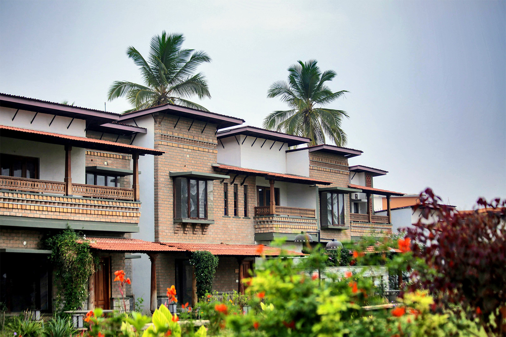
Balcony: Bringing traditional styles together
In the urban context, balconies are the small pockets functionally created to enlarge the living space by giving the resident a private window to the outside world.
At GoodEarth, these semi-shaded areas are bound by ornate, wooden balustrades that offer variety, warmth, and grandeur. A tour around the expansive community offers glimpses of the past woven into a unique adaptation to meet the needs of the present.
This mainly comes from the wooden rail design which is crafted with slight variations throughout to enable the residents the comfort of the past while generating their own narrative.
The railings are sometimes simple, slender wooden vertical balustrades held together by rails; other times an ornate jaali sheet flanked by pillars; or occasionally, the charupadi style railing with a seat for larger balconies.
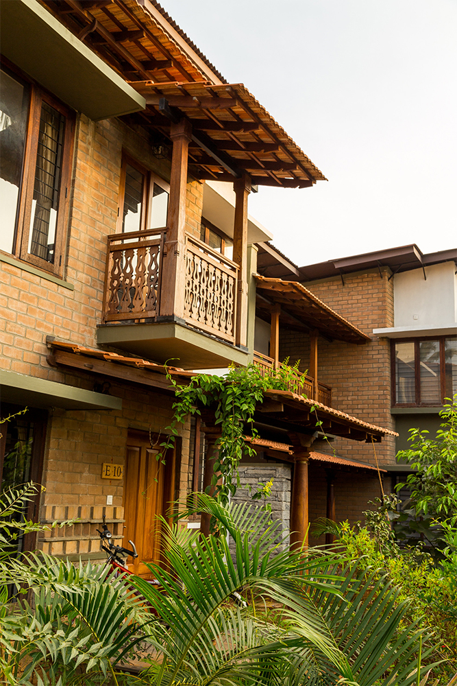
Jharokha style – A Jharokha, was most commonly seen in Mughal or Rajput architecture which comprised of an ornamented over-hang in a canopied balcony. At GoodEarth, the canopy is designed using the staple Mangalore tiles and is complemented with an ornate jaali flanked by two pillars on either side.
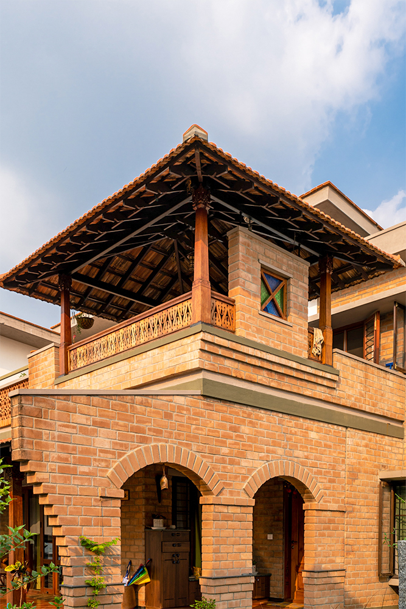
Gazebo style – The gazebo overlooking the street is crafted with earthy materials and embellished with stained glass window. This space acts as a private open space for the residents to relax while basking in the outdoors.
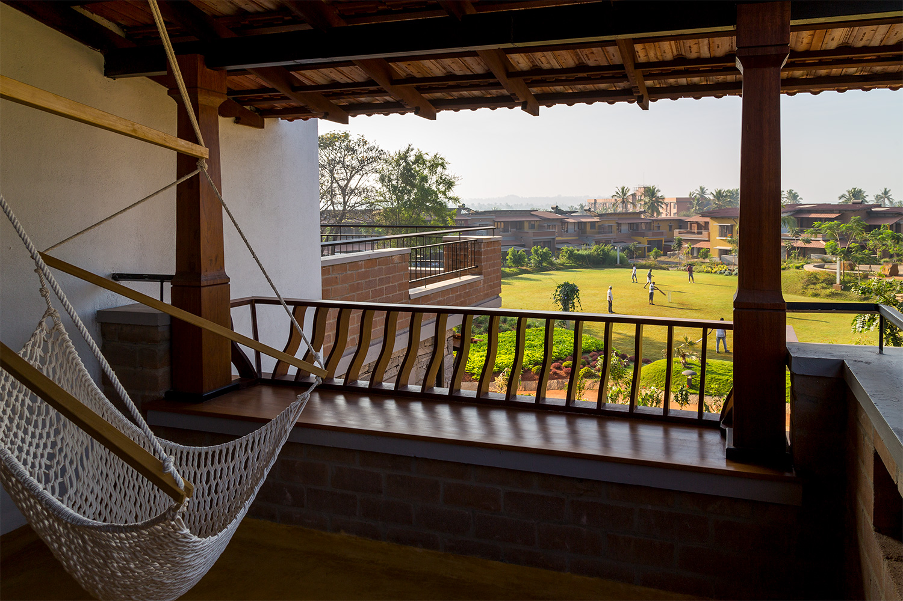
Charupadi style – The authentic contoured backrest with seating is provided in larger balconies which acts as an organic extension to their living space to unwind.
Bay Window Seat
Following the suit of creating private nooks that bring the outdoors in, a bay window seat is a part of the window where the niche of the window has a seating. At GoodEarth, this seat is given in Teak wood.
“It is a cosy corner for the residents with ample amount of light that gives a direct connection to their immediate garden outside. Thus, Teak is a perfect material offering warmth, comfort and giving that nook a striking appearance with its colour and texture. Also, we use smaller sections that are cut out from the main door and use it as bay window seat which enables the utilisation of the large wooden section completely,” says Biju P, the Project Director and Head of Carpentry at GoodEarth.
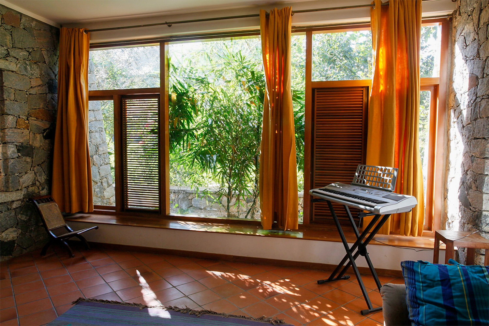
Authentic Rafters
By leveraging the strength of steel for large spans like beams, and juxtaposing it with traditional wooden rafters, the continuity of design narrative is intact. The rafters designed and placed at regular intervals create an artistic expression reminiscent of Kerala and Chettinad architecture.
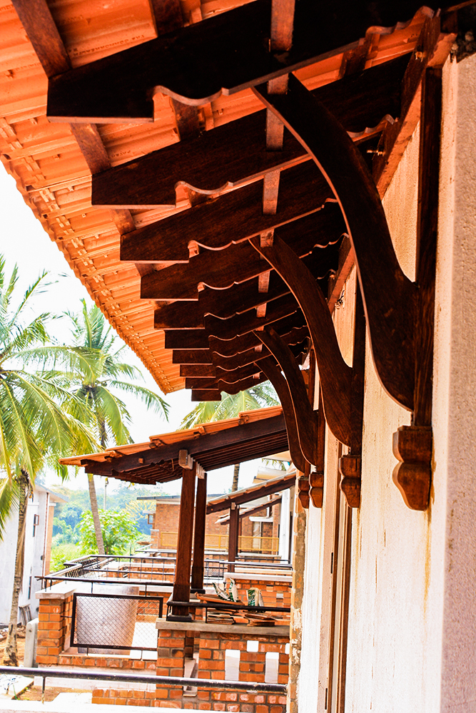
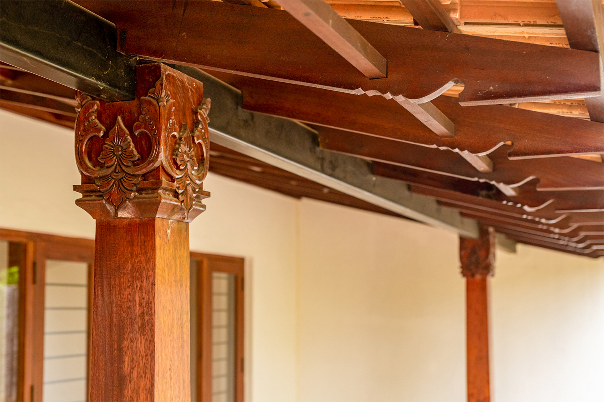
The rafters with their minute details add immense value to the aesthetic of the space.
The Internal Staircase
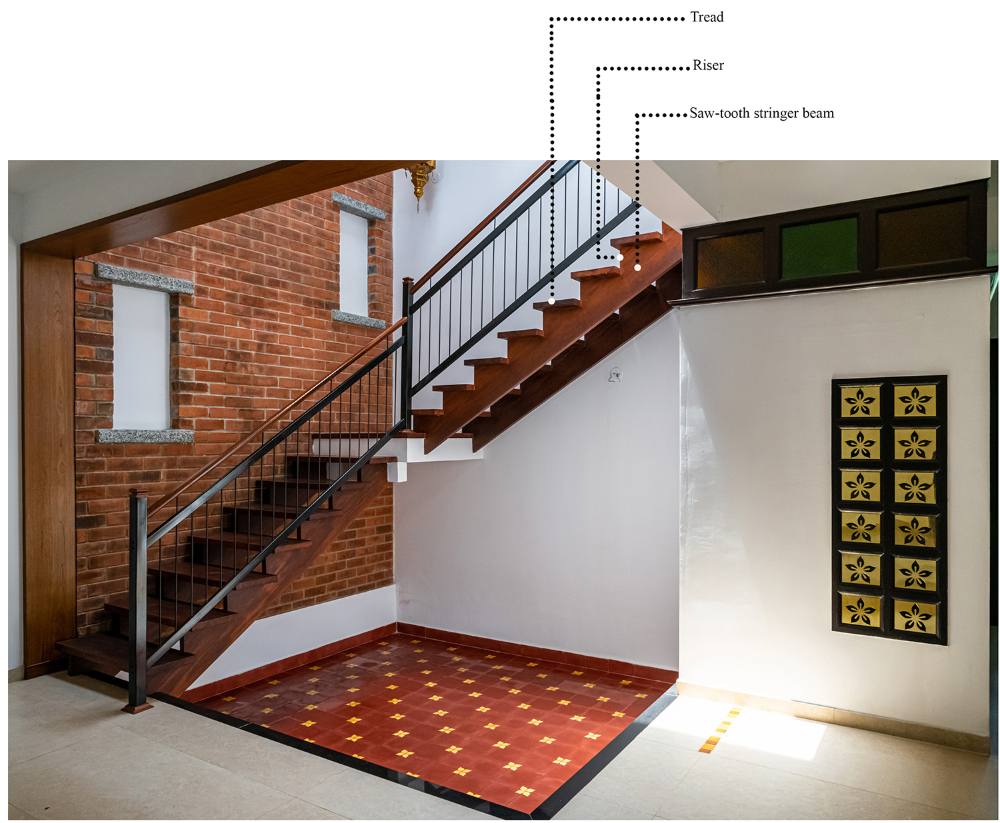
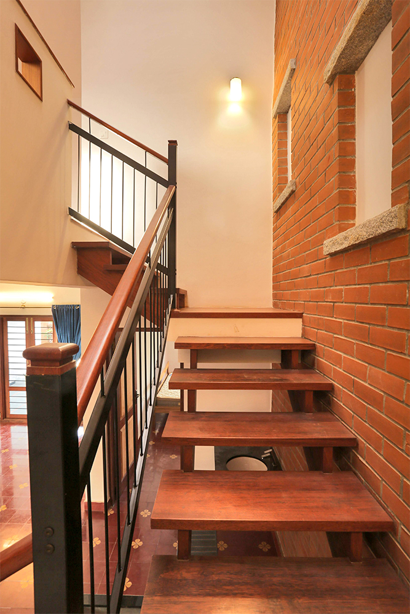
Open-staircase without risers
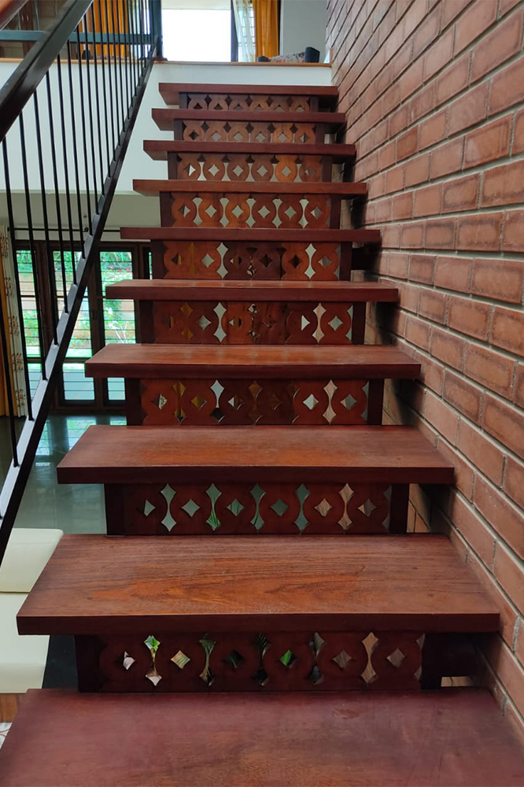
Stencilled jaali wooden risers that keep the openness intact in a closed staircase.
Stencilled jaali wooden risers that keep the openness intact in a closed staircase.
Solid wood staircases are a symbol of elegance and beauty that are unparalleled to any other material. In addition to the aesthetic appeal, these open stairs (without risers) at GoodEarth give a sense of airiness by being unobtrusive.
The saw-tooth stringer beam at the sides look neat and minimal when compared to the commonly used RCC folded-plate stairs where achieving a uniform thickness is nearly impossible due to the varying thickness of plaster.
However, more than the aesthetics, the primary factor for consideration is the strength of the timber. Thus, no compromise can be made with the usage of high-quality timber or the workmanship that includes precise joinery details that comes only with experience.
Elucidating on the process and execution of the internal staircases at GoodEarth, Biju P says, “The prominent aspect for consideration is the strength of the fibre. Thus, we use Mysore Honne or country wood. During the construction of the staircase, utmost care must be taken to design the staircase with the natural alignment of its fibres. We do this by placing the log vertically, chipping the base and studying the alignment. A thorough check has to be made with the joinery details as well. A knot or branching at the stringer beam can be detrimental to its strength. Therefore, it is important to have a fine craftsman for the job.”
The timber sections used in the residences are chosen to carry a load of minimum one tonne. Essentially, this depends largely on the strength of the stringer beams along the sides, whose dimensions are mostly a matter of judgement. Therefore, a carpenter deep rooted with traditional experience and knowledge is the key to a well-designed staircase.
Maintenance
Maintenance of wooden staircase simply means to keep a regular check on its strength. A squeaky step is innocuous caused by expansion due to weather conditions. However, if powder is seen through the joints, it has to be looked into meticulously and treated.
The Solid Floors
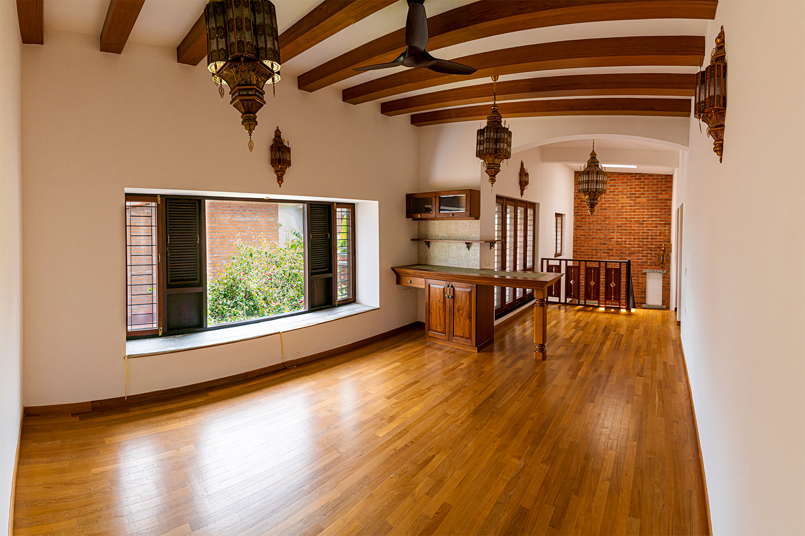
Teak hardwood floors at GoodEarth feels solid and comfortable. Its long even grain gives a luxurious appearance and the utilisation of the smaller sections of reclaimed teak wood makes it a sustainable choice as well.
One of the major requisites for its longevity is a fine-finish plaster which requires skilled masonry. When installed perfectly and with the right finish, this floor will age gracefully for decades to come